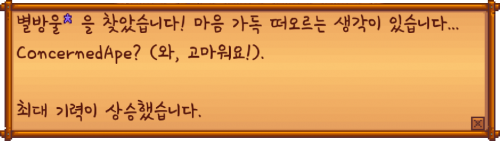

- 스타듀밸리
- 농장
- 환경
Stardew Valley
Stardew Valley is an open-ended country-life RPG!

Stardew Valley는 플레이어가 비순차적으로 목표를 달성할 수 있게 해주는 오픈
엔드형 게임입니다.
수입을 낼 수 있는 많은 방법들이 있으며 농사, 낚시, 채집, 채광, 전투 (적과 싸움),
제작, 요리, 선물, 퀘스트 완료, 마을 회관에 저장을 포함한 많은 활동들이 있습니다.
캐릭터 생성은 캐릭터 외형, 성별, 이름과 농장 이름, 좋아하는 것, 좋아하는
동물을 결정하는 단계입니다.
- 성별은 남자와 여자, 외형은 24가지의 피부색, 32가지의 헤어, 112가지의 옷, 20개의
악세사리가 있으며, 좋아하는 동물로는 강아지와 고양이가 있습니다.
- 눈 색깔, 머리 색깔, 옷 색깔 옆의 조작바로 색상, 채도, 밝기를 조절할 수 있습니다.
- 좋아하는 동물은 후에 어떤 동물을 농장에서 기를 지 결정하는 선택지입니다.
- 성별은 후에 결혼을 할 때 문제가 되지 않습니다. 즉 동성결혼도 가능합니다.
- 좋아하는 것에 게임 개발자인 ConcernedApe를 적으면, 별방울을 얻을 때
다음과 같은 문구가 출력됩니다: